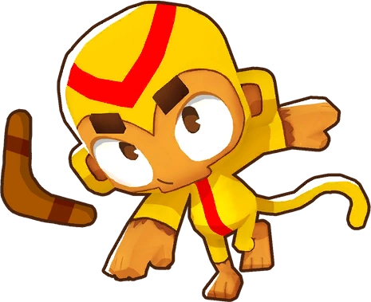
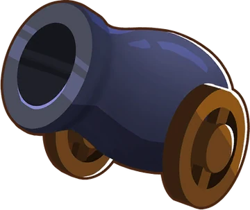
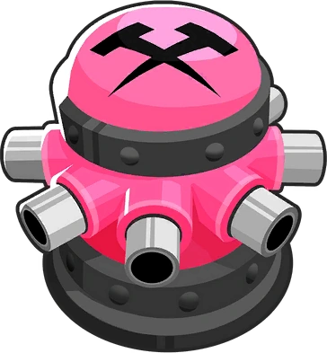
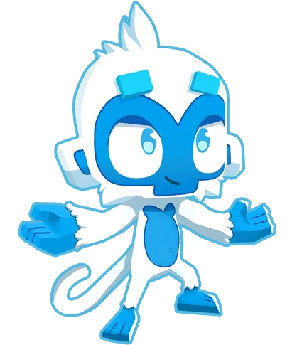
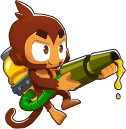
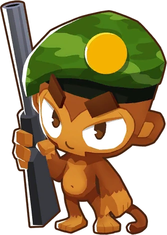
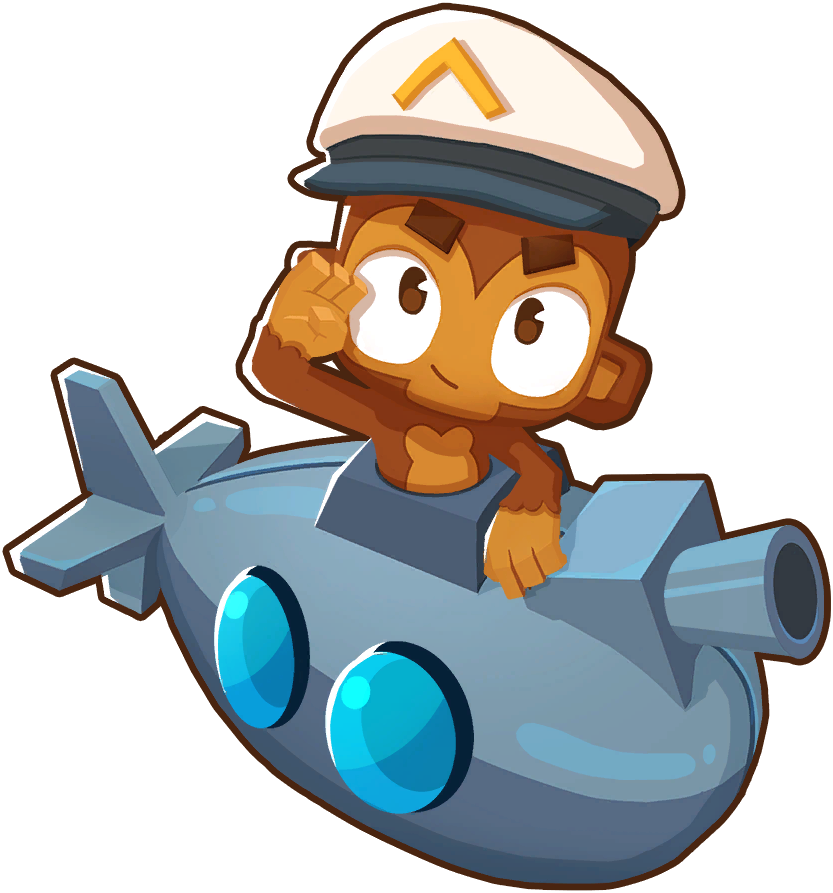

Macacos
Os macacos são usados para derrotar os balões. Cada macaco apresenta diferentes funcionalidades e formas na qual podem derrotar os inimigos. Os macacos também são dividos em: primários, militares, heróis e suporte. Vejamos alguns macacos disponíveis no jogo:
Macacos primários

Macaco Dardo
A torre mais básica. Arremessa dardos em bloons próximos e pode ser melhorada para atacar mais rápido, atingir mais alvos ou até se transformar em um poderoso arqueiro.

Macaco Bumerang
Lança bumerangues que acertam vários bloons em linha. É excelente contra grandes grupos.

Bombardeiro
Dispara bombas explosivas que causam dano em área. Muito útil contra grupos densos e bloons resistentes.

Dispara tachinha
Fica parado no chão e dispara espinhos em todas as direções. Ótimo para cruzamentos e curvas.

Macaco de gelo
Congela os bloons, atrasando seu avanço e permitindo que outras torres os destruam mais facilmente.

Macaco cola
Atira cola que desacelera os bloons ou causa efeitos especiais dependendo das melhorias.
Macacos militares

Macaco militar
Ataca qualquer lugar do mapa com tiros precisos e de longo alcance.

Macaco submarino
Torre aquática que usa sonar e torpedos para atacar.